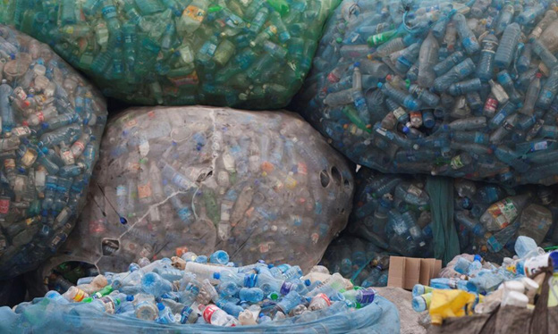

affect the life of animals in the areas they live in. Thus, plastic waste should be collected and taken to specific places for recycling, as shown in Figure 1. Due to the great impact of plastic wastes on land, on 1st June 2019, the government of Tanzania banned the use of plastic carrier bags as they were causing land pollution.

Like other types of waste, liquid waste should be managed properly because, if incorrectly disposed of, It may be harmful to human beings and other organisms. Liquid waste includes sewage from homes, industries and mines. If solid and liquid wastes get into water sources, they pollute water and affect people and other living organisms such as fish, frogs, crocodiles and hippopotamus.